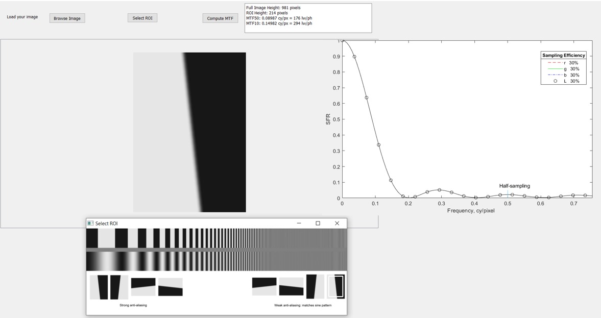
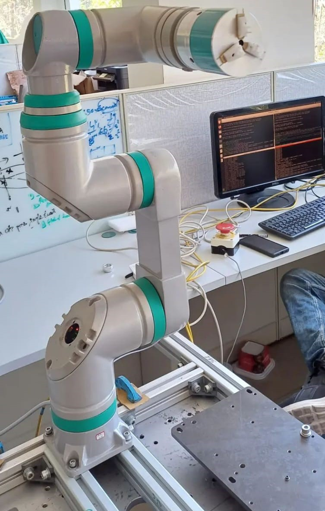
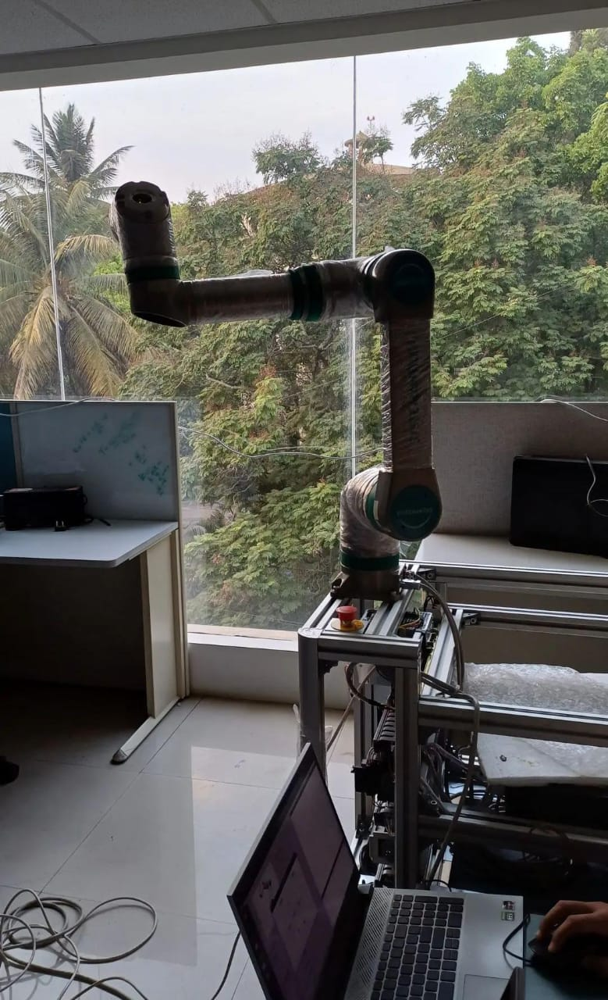
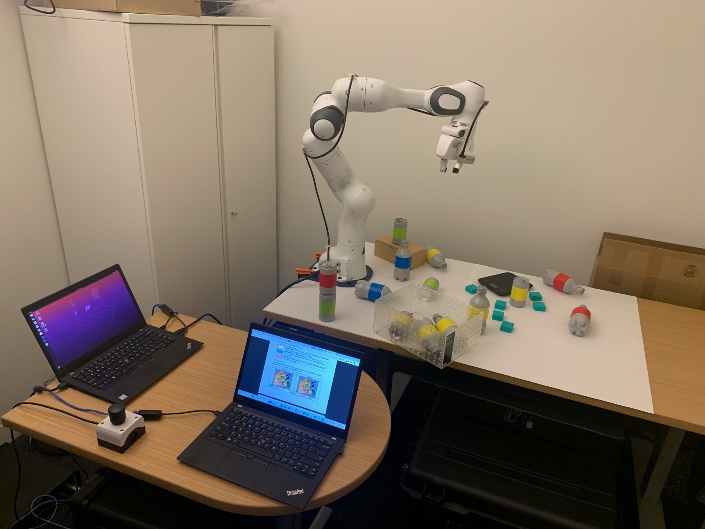
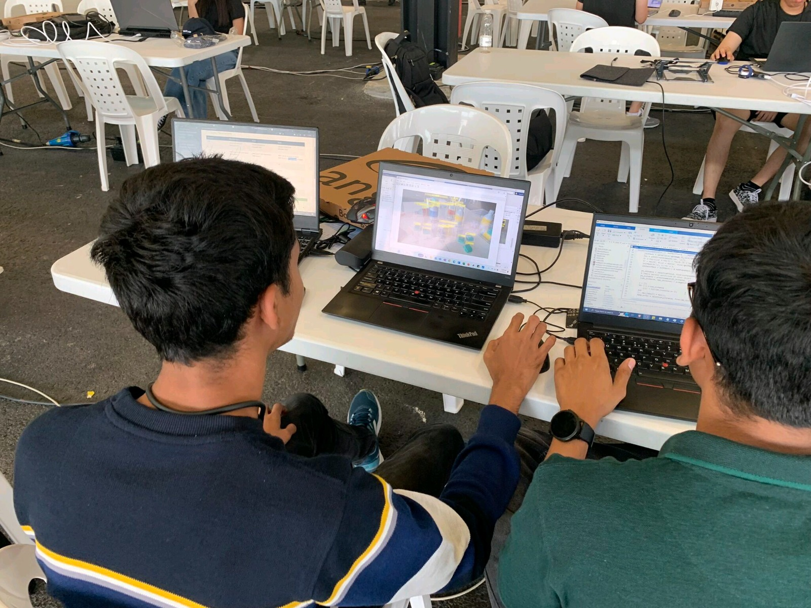
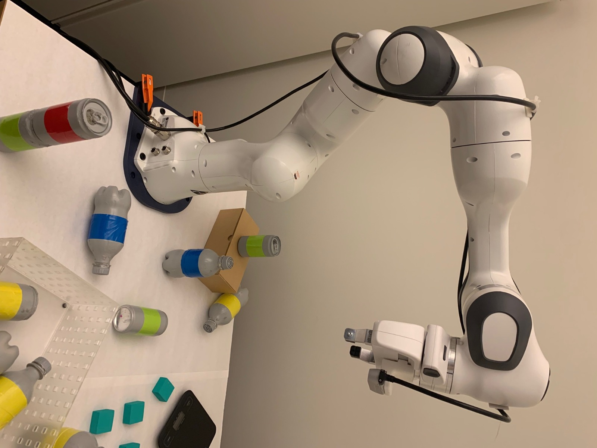
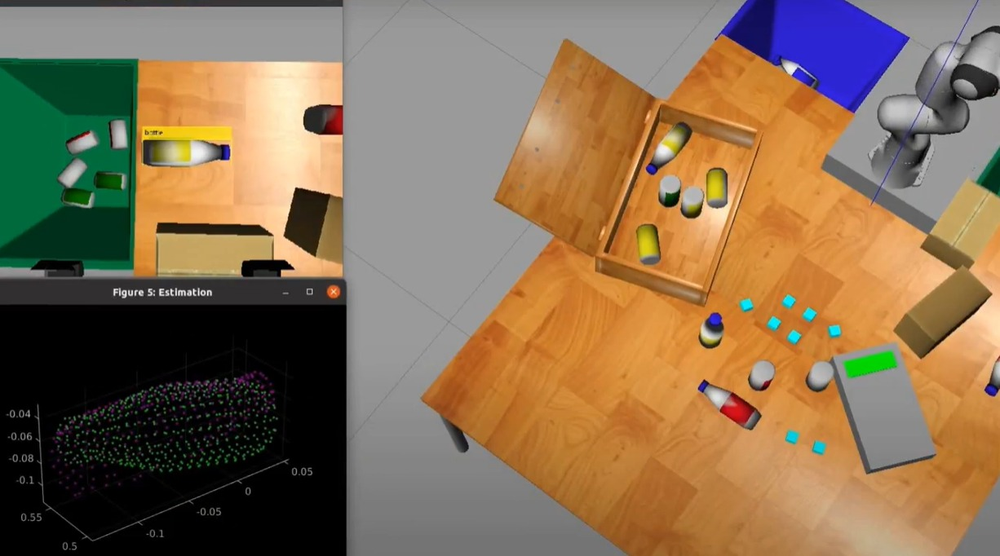
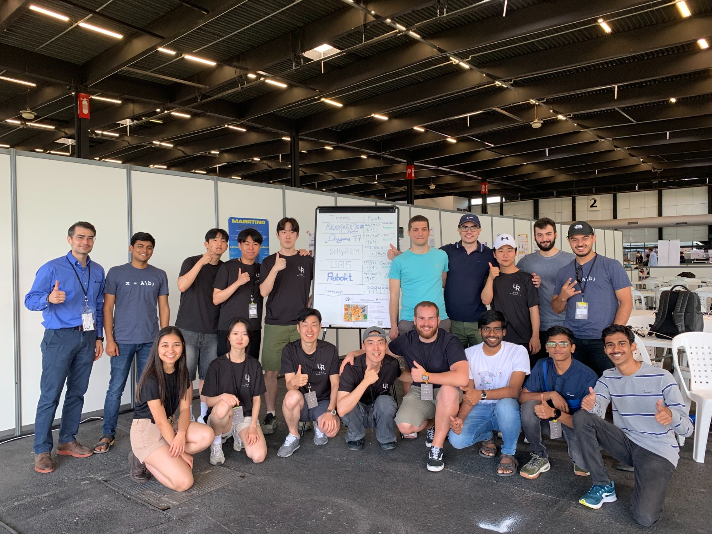

Robotics | Automotives
An ambitious and capable individual with a deeply rooted passion for engineering and exploration. My journey as an engineer has taken many forms, from crafting Steering Systems for Formula Student to developing cutting-edge software solutions. I thrive on challenges and continuously seek opportunities to innovate and create, Eager to work hard and learn continuously.

MTF/SFR


Developed ROS2-based control interface for 6DoF collaborative robot at Systemantics India.





Developed perception and planning system for Robocup ARM Challenge 2023 (5th Globally, 3rd in Asia)
Led development of CV-based cost estimation app reducing processing time from hours to seconds.
Developed advanced control systems for Electric Formula Student Vehicle.
MathWorks Minidrone Competition India 2022 project implementing vision-based path following.
Led team to 1st place in Engineering Design at Indian Karting Race 6.0
Feel free to reach out for collaborations or opportunities.